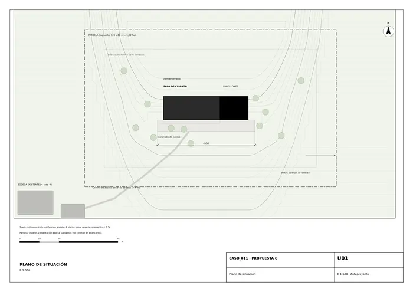
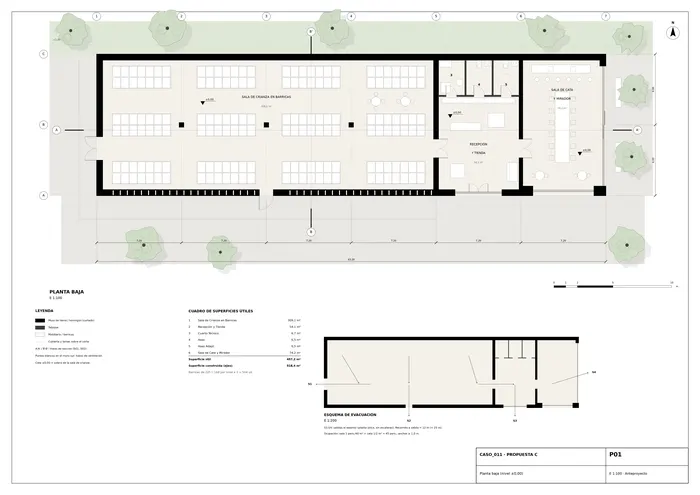
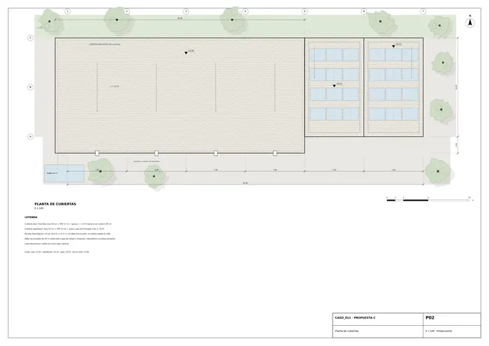
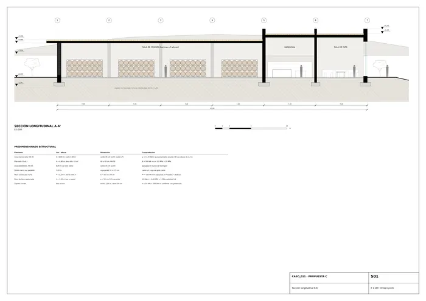
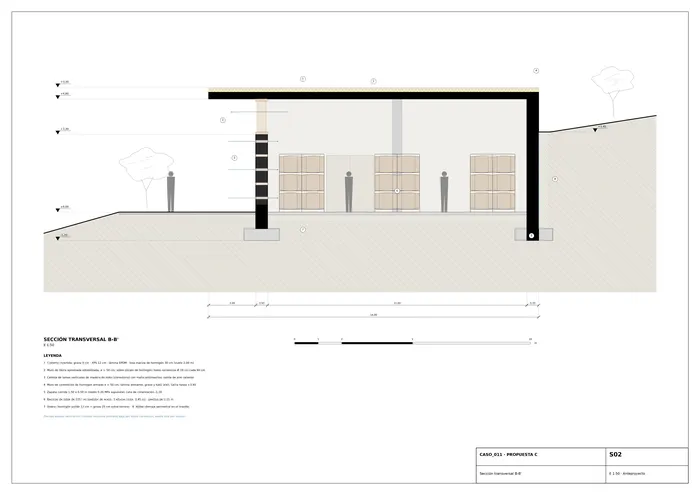
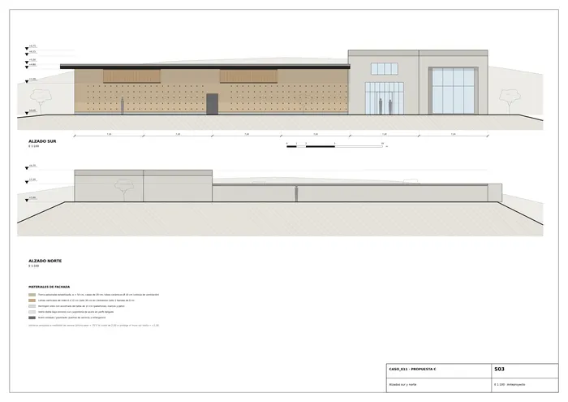
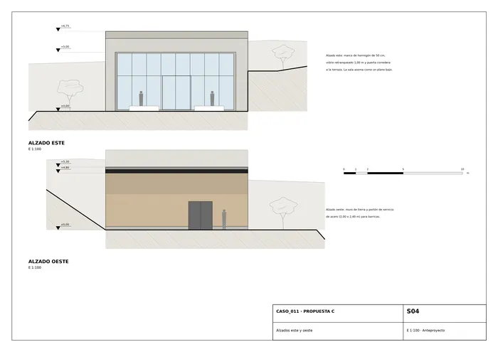
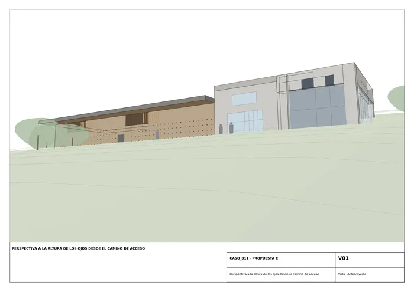
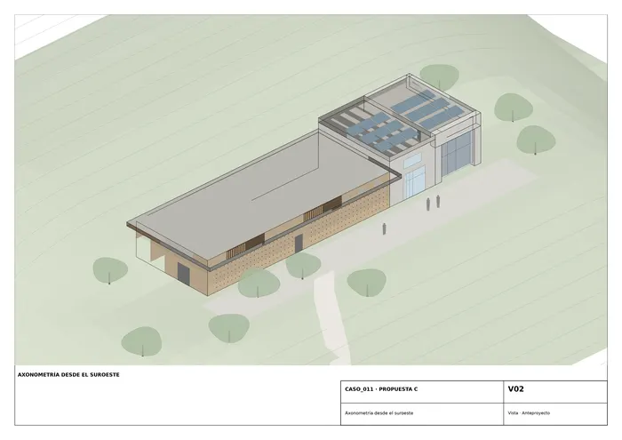
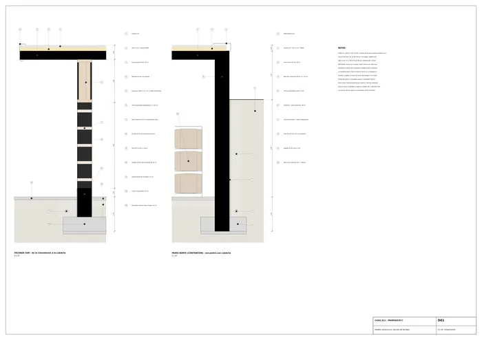

Caso 011 · Gruppo Vid'A (Gulino; Albanese) · 2021 · productivo (bodega)
La colina ya es el aislante: la sala de crianza se entierra contra el norte y deja asomar solo un plano horizontal (cubierta de hormigón con 2,00 m de vuelo) sobre un muro bajo de tierra apisonada perforado por tubos cerámicos. En el extremo este, dos pabellones-marco de hormigón (acceso/tienda y sala de cata-mirador) encuadran el paisaje. El programa es una barra de 43,2 x 12,0 m (518,4 m² construidos, 457,2 m² útiles) a lo largo de la curva de nivel, en cota ±0,00 sobre una explanada a media ladera.
Lecturas del boceto.
Tres partidos (todos con 390-650 m² y salida a cota baja desde la bodega existente):
| 1. Barra semienterrada + 2 marcos (literal) | 2. Bodega bajo la cima con patio hundido (diagramática: el edificio no se ve) | 3. Cuatro naves desiguales escalonadas ladera abajo (cuestiona la pieza única) | |
|---|---|---|---|
| Programa/superficie | 518 m², sala 309 m² con 504 barricas | 520 m² en U alrededor de patio; sala 330 m² | 4 naves, 640 m² (ajustado con rampa de 6 %) |
| Clima | inercia: 3 muros enterrados o de 50 cm; sur protegido por vuelo | máxima inercia; terraza-mirador soleada sobre la cubierta | 4 cotas, mayor envolvente expuesta |
| Vistas/paisaje | horizonte lejano desde cata y recepción; perfil bajo y horizontal | vistas solo desde cubierta; pierde el encuadre | vistas buenas pero fragmenta el paisaje |
| Accesos | explanada plana, entrada a nivel (≤ 2 %); servicio al oeste | rampa de 6 % ajustada: +19 m; entrada única | escaleras o 3 rampas de 6 % entre terrazas |
| Normativa/evacuación | 4 salidas directas, planta única | salida por rampa; sin salidas laterales | recorridos exteriores largos, 4 cotas |
| Valoración | elegido | descartado: tras ajustar la rampa persisten 6.000 m³ de excavación (frente a ≈ 2.200) y la cata sin luz lateral | descartado: tras ajustar, persisten 4 niveles de trasiego de barricas y 3 contenciones |
Elijo el 1 porque sale de la lectura literal pero resuelve lo esencial del diagramático: la inercia térmica, con un tercio del movimiento de tierras del 2 y sin trasegar barricas entre cotas.
Dos estrategias de envolvente. A (elegida): masiva, 8 % de hueco; tierra apisonada estabilizada de 50 cm con 2 bandas de lamas de iroko (clerestorio) y 210 tubos cerámicos, más marcos de hormigón de 50 cm con vidrio retranqueado 0,4-1,0 m; profundidad de fachada 0,5-1,0 m. B: ligera, 60-70 % de hueco, lamas de madera sobre vidrio o chapa ventilada, 20 cm de profundidad. Elijo A porque el paisaje agrícola no tiene vecinos (no se busca representación urbana), la sala necesita oscuridad, 13-16 °C y humedad alta, y el sur con 70° de altura solar en verano castiga cualquier piel fina. Los huecos grandes se reservan a los pabellones, donde el hueco es el encuadre, protegido por un dintel-viga de 1,75 m de canto y derrame de 0,8 m. Un simple hueco en paño no bastaría para la cata, que necesita 10 m de vidrio continuo hacia el valle.
Eje E-O con tres piezas: sala de crianza (ejes 1-5), recepción y tienda (5-6) y cata-mirador (6-7). Acceso de visitantes por el sur a la recepción, que reparte a la cata y, por una puerta doble, a la sala (visita sin cruzar zonas de trabajo). Portón de servicio (2,00 x 2,40 m) en el oeste para palés de barricas, alineado con el pasillo central de 2,15 m. Aseos y cuarto técnico agrupados al norte de la recepción.
| Exigido | Propuesto | Cumple / desviación |
|---|---|---|
| Plantas | P01 planta baja, P02 cubiertas (png/pdf/dxf) | Cumple |
| Secciones (2) | S01 longitudinal A-A', S02 transversal B-B' (png/pdf/dxf) | Cumple |
| Alzados | S03 sur y norte, S04 este y oeste | Cumple |
| Sala de crianza en barricas (nº y m² a definir) | 1 sala de 309,1 m², 504 barricas de 225 l (168 por nivel x 3) | Cumple |
| Espacios complementarios: acceso, servicios, recepción de visitantes | Recepción y tienda 1 ud. 54,1 m²; sala de cata y mirador 1 ud. 74,2 m²; cuarto técnico 1 ud. 6,7 m²; aseo 1 ud. 6,5 m²; aseo adaptado 1 ud. 6,5 m² (tipos distintos, no repetidos) | Cumple |
| Superficie construida 390-650 m² | 518,4 m² construidos (útil 457,2 m²) | Cumple |
| Colina suave, parte alta, pendiente a los lados | Plataforma a media ladera, cota ±0,00, tierra contra el muro norte (+3,40) | Cumple |
| Integración en paisaje agrícola; carácter productivo | Perfil horizontal bajo (máx. +6,75 m solo en los marcos), tierra, hormigón visto, madera | Cumple |
| Vinculado a bodega existente | Camino de acceso de 6 % desde la bodega (U01); aljibe con rebosadero a la balsa existente. La bodega no se toca | Cumple |
| Parcela, linderos, accesos, normativa (no constan) | Supuestos: parcela 128 x 80 m, retranqueo ≥ 10 m, ocupación < 5 %, 1 planta | Cumple con supuestos declarados |
| Edificación existente | Se conserva íntegra fuera de la parcela; no hay demolición; todo el volumen es nuevo | Cumple |
| Clima Csa (verano seco, viento) | Ver §6 | Cumple |
Losa maciza de hormigón HA-30 de 30 cm sobre pilares de 40 x 40 cm en trama de 7,20 x 6,00 m (L/20; vuelo sur de 2,00 m, L/7), con ábaco de 1,2 m en pilares: q ≈ 11,5 kN/m², N ≈ 500 kN, σ = 3,1 MPa. Pabellones: losa de 35 cm que salva 6,85 m entre muros de hormigón y dintel-marco de 50 x 175 cm (L/4). Muro de contención norte de 50 cm (M ≈ 100 kN·m/m, apoyado en cabeza en el forjado). Muros sur y oeste de tierra apisonada (40 kN/m, 0,08 MPa). Zapatas corridas de 1,50 x 0,50 m a -1,20 m (σ ≈ 55 kPa; terreno supuesto 200 kPa, a confirmar con estudio geotécnico).
La inercia de 50 cm de tierra y hormigón mantiene la sala a 13-16 °C todo el año. En verano, ventilación cruzada nocturna: entrada baja por los tubos y salida alta por las lamas, sin energía. El vuelo de 2,00 m sombrea el muro sur hasta ≈ +1,30 al mediodía de verano; en invierno el sol bajo entra por los marcos de la cata. El tamaño reducido del hueco y el perfil bajo reducen la exposición al viento; el norte queda enterrado. La humedad objetivo (70-80 %) se mantiene con solera de grava; apoyo de nebulización en verano. Las cubiertas recogen 30 m³ de agua de lluvia en un aljibe para riego y limpieza.
Todo el edificio está en una sola cota (±0,00). La entrada está a nivel con la explanada (pendiente ≤ 2 %); el camino de acceso no pasa del 6 %. Las puertas miden ≥ 0,90 m (dobles de 1,60 m en los pasos principales); los pasillos, 2,15 m en la sala. El aseo adaptado permite giro de 1,50 m. La evacuación tiene cuatro salidas directas al exterior (S1 portón oeste, S2 puerta sur de 1,20 m, S3 entrada principal, S4 corredera este), con recorrido ≈ 12 m (< 25 m). Ocupación estimada: ≈ 45 personas. No hay escaleras.
Supuestos de parcela, orientación (sur hacia el valle) y terreno: ver U01.

U01 · Plano de situación
P01 · Planta baja (nivel ±0,00)
P02 · Planta de cubiertas
S01 · Sección longitudinal A-A'
S02 · Sección transversal B-B'
S03 · Alzados sur y norte
S04 · Alzados este y oeste
V01 · Perspectiva a la altura de los ojos desde el camino de acceso
V02 · Axonometría desde el suroeste
D01 · Detalle constructivo: sección de fachadaMemoria de la propuesta tal como la entregó el sistema. Se han omitido las notas internas del proceso (revisiones, control de reconocimiento y referencias a archivos de trabajo).